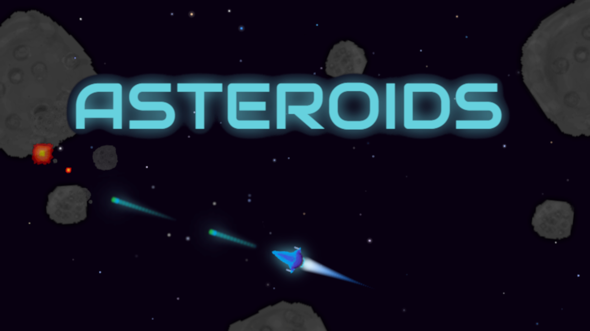
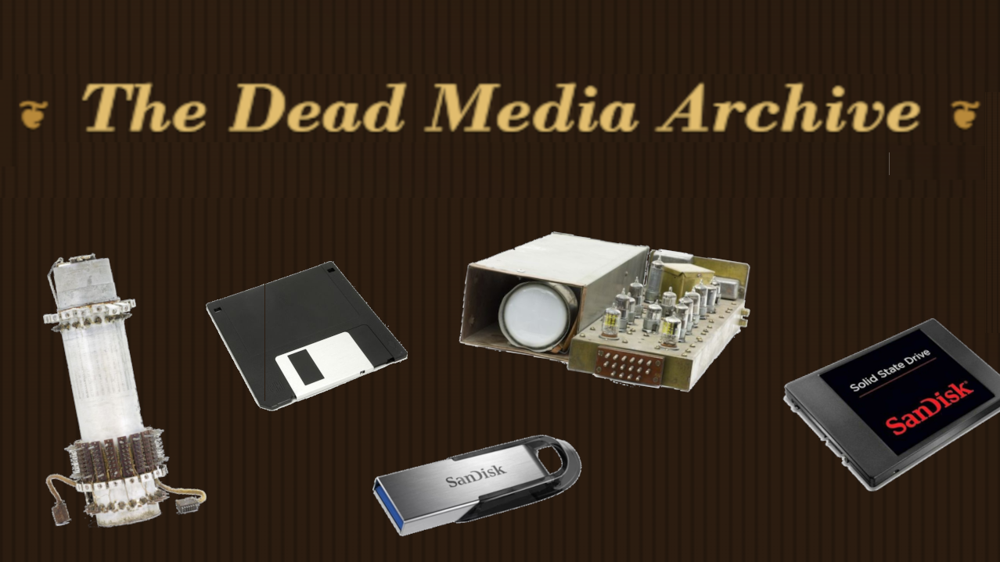

A running collection of things I've built, broken, and rebuilt.

Dodge rocks. Shoot rocks. Get hit by rocks. Repeat.

How much retro hardware would your digital file require to store?
Comparing the odds of unlikely scenarios to see just how improbable they really are